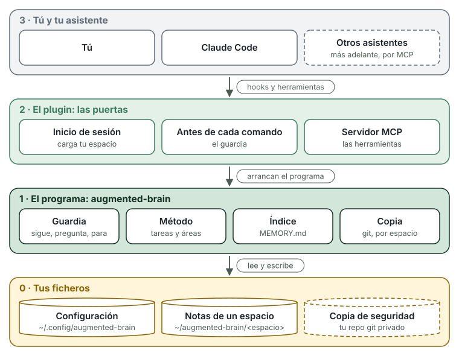
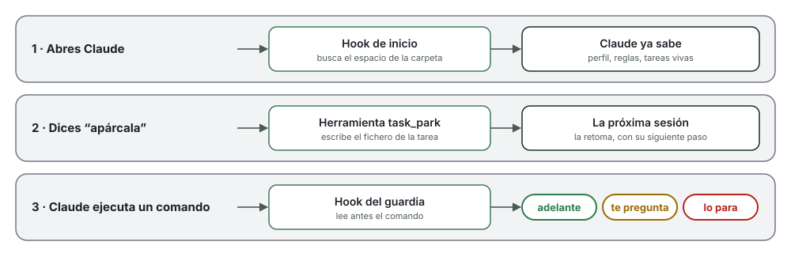

augmented brain
augmented brain
Cómo funciona
augmented brain es un programa pequeño y una carpeta de notas. Así encajan las piezas:

Cuatro capas
| Capa | Qué es | Dónde vive |
|---|---|---|
| 3 · Tú y tu asistente | Hablas con Claude Code como siempre. No hay comandos nuevos que aprender. | Tu terminal |
| 2 · El plugin | Las puertas por las que Claude entra al programa: dos hooks y un servidor MCP. | Dentro de Claude Code, que lo instala |
| 1 · El programa | augmented-brain, un solo fichero. Vigila los comandos, lleva las tareas, rehace el índice y hace la copia. | ~/.local/bin/augmented-brain |
| 0 · Tus ficheros | Texto normal: la configuración, tus notas y, si quieres, su copia. | ~/.config/augmented-brain/, ~/augmented-brain/ y tu repo git |
Dicho de otra forma: tus notas son un cuaderno, el programa es quien lo ordena y el plugin es la puerta. Tú solo hablas con Claude; Claude entra por la puerta y el programa escribe en el cuaderno.
Dos palabras que salen mucho:
- Hook: un aviso que Claude Code lanza en un momento concreto. Aquí, al empezar la sesión y antes de cada comando. En cada aviso, Claude Code arranca el programa, le pregunta y el programa termina. No queda nada funcionando de fondo.
- MCP (Model Context Protocol): un estándar abierto para dar herramientas a un asistente. El programa ofrece las suyas (“abre una tarea”, “apárcala”) y Claude las usa. Al ser un estándar, otros asistentes podrán usar las mismas.
Una sesión, paso a paso

1. Abres Claude. El hook de inicio mira en qué carpeta estás y elige tu espacio. Antes de que escribas nada, le pasa a Claude tu perfil, tus reglas y la lista de tareas vivas. Por eso sabe dónde lo dejaste.
2. Dices “apárcala”. Claude usa la herramienta task_park. El programa apunta en el fichero de la tarea dónde se quedó y cuál es el siguiente paso, y rehace el índice. La próxima sesión empieza desde ahí. Abrir, retomar y cerrar funcionan igual.
3. Claude va a ejecutar un comando. El hook del guardia lo lee antes y decide:
- Adelante: casi siempre.
ls,go test,aws --profile dev s3 ls. - Te pregunta: producción, o una máquina que marcaste como intocable.
aws --profile prod …,ssh db01 …. Esas dos listas son de toda la máquina: valen en todos los espacios. Unawsse mira con todos los perfiles que puede usar:--profile,AWS_PROFILE,AWS_DEFAULT_PROFILE, odefaultsi no hay ninguno. Igual las herramientas que llaman a AWS por su cuenta (cdk,sam,serverless,terraform,tofu,pulumi,eksctl,copilot). - Lo para: subir código, root y secretos.
git push,sudo …, un token en un comando, y lo que publica como un push:gh pr merge,gh release create,glab mr merge. Puedes dejar que Claude haga commit y push en un repositorio tuyo, siempre escrito comogit -C <repo>: ponlo engit_allowed_reposdel espacio para que pase, o engit_ask_repospara que te pregunte cada vez. Como los perfiles de producción, estas listas valen en toda la máquina: un repositorio de la lista de un espacio pasa desde una sesión de cualquiera de ellos. Un worktree de un repositorio de la lista cuenta como él, y~/code/app-*vale para cada carpetaapp-<nombre>junto aapp. Incluso ahí, un push que reescribe o borra lo que hay en el remoto (--force,--delete,+rama) te pregunta antes. Y unrm -rde tu carpeta personal entera o del disco entero no se ejecuta nunca.
También mira dentro de ssh, de bash -c, de los bucles y de lo que una tubería le pasa a una shell (echo 'sudo …' | bash). Si no puede leer su configuración, te pregunta antes de cada aws, ssh, scp, rsync, sftp y mosh, y antes de las herramientas que llaman a AWS por su cuenta, porque no sabe cuáles importan. Los comandos que Claude deja en marcha para vigilar algo (un registro, una compilación) se miran igual, y también los de los ayudantes que Claude lanza (subagentes y flujos de trabajo). Si el guardia no puede ni arrancar, porque falta el programa o está roto, Claude Code para el comando o el cambio en el fichero en vez de dejarlo pasar (Claude Code 2.1.295 o posterior). augmented-brain doctor prueba el guardia de verdad y te dice si no está funcionando. Lee la shell, no PowerShell, así que para también cualquier comando de PowerShell, y Claude lo hace en Bash. Es una red contra despistes, no un muro de seguridad: lee el aviso legal.
Lo que vence ese día. Si una tarea tiene una fecha de aviso para hoy o mañana, o algo apuntado con “recuérdamelo el jueves”, Claude te lo dice nada más empezar. Y si hace una semana o más de la última revisión y hay cosas en el buzón o tareas paradas, te ofrece la revisión semanal: unos diez minutos repasando contigo cada cosa.
Mientras trabajas, Claude va apuntando. Cada decisión o paso terminado va al diario de la tarea en el momento, no solo al aparcarla: una sesión puede acabar en cualquier momento. Si hay una tarea abierta y en 20 minutos no se ha escrito nada en ella, un hook al final de la respuesta de Claude se lo recuerda, una vez. Cuando una conversación larga se compacta (Claude Code cambia los detalles por un resumen), el resumen se guarda en archive/sessions/, el diario de la tarea apunta a él, y Claude anota lo decidido antes de seguir.
4. Cierras la sesión. El hook de cierre apunta que la sesión acabó bien y lanza la copia de seguridad del espacio, por detrás, si la tienes montada. No esperas a nada. Si la copia falla, Claude te lo dice al empezar la siguiente. Si una sesión no acabó bien (se cerró la ventana a la fuerza, se apagó la máquina), la siguiente te ofrece recuperarla: Claude lee lo que os dijisteis después de la última entrada del diario de la tarea, en el registro de la conversación que guarda Claude Code en esta máquina (lo guarda 30 días), y apunta lo que falte.
Tus ficheros
Todo vive en ~/augmented-brain, con una carpeta por espacio. Trabajas dentro de ella, y sus notas van en notas/:
~/augmented-brain/
├── trabajo/ abre Claude aquí para lo del trabajo
│ ├── notas/
│ │ ├── MEMORY.md el índice que Claude lee al empezar (lo genera el programa)
│ │ ├── inbox.md apuntes rápidos, para ordenar luego
│ │ ├── areas/ lo que cuidas siempre: "la web", "los servidores"
│ │ ├── tasks/ un fichero por tarea
│ │ ├── knowledge/ cómo funcionan las cosas y lo aprendido
│ │ ├── people/ con quién tratas, para saber quién es "Marcos"
│ │ ├── rules/ reglas solo de este espacio
│ │ ├── reviews/ revisiones semanales
│ │ └── archive/ lo antiguo; no se carga y no se borra
│ └── (tus proyectos)
└── personal/ y aquí para lo personal, con sus propias notas/Tu perfil, quién eres y cómo te gusta trabajar, es uno para todos los espacios: ~/.config/augmented-brain/profile.md. No hace falta escribirlo a mano: la primera vez que abres Claude, te hace seis preguntas rápidas, explicándote el porqué de cada una. Con tus respuestas guarda el perfil, crea tus áreas, le dice al guardia (para todos los espacios) qué es producción y qué máquinas no se tocan, y apunta a las personas con las que trabajas. Para cambiar cualquier cosa, díselo.
Una tarea es un fichero de texto. Arriba, entre las líneas ---, los datos que usa el programa. Debajo, lo que escribís tú y Claude:
---
id: task-anadir-un-formulario-de-contacto
type: task
title: Añadir un formulario de contacto
area: area-web
status: parked
waiting_on: me
next: Escribir el plan
created: "2026-10-15"
updated: "2026-10-15"
---
## Lo esencial
Nombre, correo y mensaje, enviado por email.
## Diario
- 2026-10-15 — Tarea abierta.
- 2026-10-15 — Aparcada. Siguiente: Escribir el planUna tarea grande se puede partir de dos maneras. Un paso es una parte pequeña: una casilla del Plan de la tarea, - [ ] Comprar el dominio, que se marca al hacerla; el índice dice cuántos van hechos (“2/5 pasos”). Una subtarea es una parte con vida propia, porque espera a otra persona o lleva su propio ritmo: una tarea más, con una línea de más arriba, parent:, el id de la tarea grande. El índice la pone debajo de esa tarea. Un solo nivel: una subtarea no tiene subtareas, y la tarea grande se cierra la última.
Puedes abrir y editar todo con cualquier editor. El formato completo está en memory-format.md (en inglés).
Trabajo y personal, separados
Un espacio es un juego completo de notas, reglas y copia. El instalador crea dos, trabajo y personal. La carpeta donde abres Claude elige el espacio, según tu configuración:
# ~/.config/augmented-brain/config.toml
default_space = "personal"
[spaces.trabajo]
memory = "~/augmented-brain/trabajo/notas"
work_folders = ["~/augmented-brain/trabajo"]
[spaces.personal]
memory = "~/augmented-brain/personal/notas"
work_folders = ["~/augmented-brain/personal"]En ~/augmented-brain/trabajo/web, Claude ve las notas del trabajo. En ~/augmented-brain/personal/blog, las personales. Nunca se mezclan.
¿Y si abres Claude en otra carpeta? Por ejemplo, la app de escritorio empieza cada sesión nueva en una carpeta temporal suya. Entonces se usa el espacio por defecto, personal, y Claude te lo dice en una línea, con cómo pasar al de trabajo. Su copia de seguridad es también la que guarda tu perfil. Puedes cambiarlo en default_space; si tienes un solo espacio, es ese. Un espacio añadido con space add lo fija si no lo había.
¿Tus proyectos ya viven en otra carpeta, como ~/code? Añádela a work_folders del espacio que toque. Para un espacio nuevo (un cliente, por ejemplo): augmented-brain space add cliente.
Notas compartidas
Algunas cosas que aprendes valen en todas partes: cómo se porta git, cómo te gustan las respuestas, una lección sobre una herramienta. Guardarlas dos veces, una por espacio, dejaría dos copias que acaban siendo distintas. Por eso van una sola vez en las notas compartidas, junto a tu perfil: ~/.config/augmented-brain/shared/. Ahí solo van reglas, referencias y lecciones. Las tareas, las áreas y las personas son siempre de un espacio.
Todos los espacios las ven. Las reglas compartidas se cargan al empezar cada sesión, como las del espacio: enteras si caben, y si no, una línea cada una con su resumen, para que Claude abra el fichero cuando necesite el detalle. Las referencias y lecciones compartidas salen en una línea cada una, y Claude abre la que necesite. No hay que mover ficheros a mano: dile a Claude «esto vale para todo» y la guarda como compartida. Viajan en la copia de seguridad del espacio por defecto, como tu perfil.
La copia de seguridad
La carpeta de notas de cada espacio es también un repositorio git. La copia lo sube a un repositorio privado tuyo, uno por espacio.
Montarla: pídeselo a Claude. Dile “monta la copia de seguridad” (al final de la entrevista ya te lo ofrece). Crea en tu cuenta de GitHub un repositorio privado, augmented-brain-<espacio>, lo conecta y hace la primera copia. Para eso usa gh, la herramienta oficial de GitHub: si no la tienes, Claude te dice cómo instalarla y te guía en el único paso que necesita tu navegador, entrar con tu cuenta. ¿Prefieres otro sitio (GitLab, el git de tu empresa)? Dale la dirección del repositorio, o hazlo tú:
augmented-brain backup setup git@gitlab.com:tu-usuario/mi-cerebro.gitDesde entonces se hace sola cada vez que terminas una sesión de Claude, en segundo plano. Si falla (sin conexión, sin permiso en el repositorio), Claude te lo dice al empezar la siguiente. También puedes lanzarla a mano:
augmented-brain backup # este espacio
augmented-brain backup --all # todosEn una máquina nueva
- Instala augmented brain con el comando de siempre. Te crea los espacios vacíos. Si al acabar se abre Claude, ciérralo sin hacer la entrevista: tu perfil viene en la copia.
- Recupera cada espacio desde su copia:
Sustituye el espacio vacío por el tuyo: notas, tareas, reglas y la configuración del espacio. Tu perfil viene con el espacio por defecto (augmented-brain restore https://github.com/tu-usuario/augmented-brain-trabajo.gitpersonal). Las listas del guardia (producción, máquinas intocables) no van en ninguna copia, porque pueden nombrar máquinas de tu trabajo: la siguiente sesión te ofrece volver a pedírtelas. Si ese espacio ya tuviera notas tuyas, no lo pisa. Si algo falla a medias, el espacio vacío se queda como estaba. - Abre Claude. Sigue donde lo dejaste, y la copia sigue haciéndose sola.
Si el repositorio está en GitHub, antes de restaurar entra una vez con gh auth login para que git tenga permiso.
Lo que te da:
- Una máquina nueva en minutos, con los tres pasos de arriba.
- Varias máquinas, un solo cerebro. Antes de subir, la copia trae lo que hizo tu otra máquina y lo mezcla.
- Todo el historial. Cada copia es un commit de git, con la máquina y la hora. Con
git logves qué cambió y puedes volver a cualquier día. - En tu sitio. GitHub, GitLab o tu servidor: el repositorio lo eliges tú. No hay nube de augmented brain.
- Un repositorio por espacio. El del trabajo puede ir al git de la empresa y el personal al tuyo. Tu perfil solo viaja en la copia del espacio por defecto, nunca en la del trabajo.
- No sube secretos. Si una nota tiene algo que parece una contraseña o un token, la copia se para y te dice en qué fichero.
- No pisa nada. Si dos máquinas cambiaron la misma nota, se para sin tocar nada y te explica cómo resolverlo. El índice, que es generado, se rehace solo, y las capturas del buzón hechas en dos máquinas se guardan las dos. Un detalle: una captura que procesaste en una máquina puede volver si la otra apuntó algo a la vez. Sale otra vez en la siguiente revisión, sin más.
- Ni basura ni gigantes. Los restos de un cuelgue y los ficheros que dejan los sistemas en las carpetas (
.DS_Store,Thumbs.db) se quedan fuera. Un fichero de más de 50 MB también (GitHub los rechaza), y Claude te dice cuál al empezar la siguiente sesión.
Para apagar la copia automática: AB_NO_AUTO_BACKUP=1.
Trae una memoria que ya tienes
Si Claude Code ya te guarda una memoria (los ficheros que escribe en ~/.claude/projects/<carpeta>/memory/), puedes traerla a tus espacios:
augmented-brain import ~/.claude/projects/<carpeta>/memoryEso no escribe nada. Enseña adónde iría cada nota y lo que no ha podido decidir: ficheros que no son notas (un índice), notas sobre ti (copia lo que importe a tu perfil), enlaces que cruzarían de un espacio a otro, ids que tu espacio ya tiene. Cuando la lista esté bien, vuelve a lanzarlo con --apply. La carpeta de la que importas solo se lee.
Cada fichero pasa a ser una nota de su tipo: por su nombre (task-…, area-…, ref-…, lesson-…, rule-…, person-…) o, si no, por lo que Claude Code dice que es. Una tarea sin estado entra aparcada, esperándote, con «revisar esta tarea importada» como siguiente paso. Con más de un espacio, un fichero pequeño dice a qué espacio va cada área, qué notas van a otro sitio que su área y cuáles van a las notas compartidas:
area-familia = personal
task-curso-del-cole = trabajo
lesson-git-commits-pequenos = shared
* = trabajoy se pasa con --map <fichero>. --repos-base <carpeta> dice respecto a qué carpeta están los repos: de las notas, para reescribirlos respecto a la carpeta de trabajo del espacio.
Lo demás también viene. Las capturas de tu inbox.md antiguo (cada línea - …) van al buzón del espacio de *, con su fecha y nunca dos veces. archive/ y docs/<tarea>/ se copian tal cual, junto a su nota. Una nota con un secreto escrito (una clave, un token) se importa, pero sale en el informe: la copia de seguridad no la sube hasta que se quite. augmented-brain check también la nombra.
El panel
El panel es una página en tu navegador para ver y cambiar tus espacios sin pasar por Claude. Ábrelo con /brain:panel en Claude, o desde una terminal:
augmented-brain panelAbre tu navegador, en el espacio de la carpeta desde la que lo lanzas. Si no puede (en un ordenador sin pantalla, por ejemplo), escribe una dirección para que la abras tú. Lo que encuentras, espacio por espacio:
- Tareas: primero las que te esperan a ti, con su estado y su siguiente paso. Abre una para leerla entera, escribir en su diario, cambiar su estado o su siguiente paso, aparcarla o cerrarla. También puedes abrir tareas nuevas.
- Recordatorios: las fechas para revisar de tus tareas y los recordatorios del buzón, primero lo atrasado. Añade uno, o márcalo como hecho.
- Buzón: apunta una idea, o marca una como resuelta.
- Áreas, conocimiento, reglas y personas: para leer, y para crear áreas. Conocimiento y reglas enseñan las del espacio y las compartidas, marcadas «compartida».
- Sesiones: tus sesiones de Claude en este ordenador, de los últimos 30 días. Las que no terminaron (cerradas a la fuerza, o cortadas al apagarse el ordenador) muestran lo dicho después de la última anotación del diario: guárdalo en las notas (va a
archive/sessions/con una línea en el diario de la tarea) o dalas por revisadas. Las que están en marcha y las terminadas, con lo que ocupan sus transcripciones (los ficheros donde Claude Code guarda cada conversación). Puedes borrar la transcripción de una sesión terminada; esa sesión ya no se podrá retomar. - Perfil: quién eres y cómo te gusta trabajar, el mismo para todos los espacios.
- Estado: notas que no son válidas, repositorios a los que apuntan las notas y que ya no están en este ordenador, el índice, la última copia de seguridad y la última revisión semanal.
Cambia tus notas igual que Claude, con el mismo programa, y se esperan el uno al otro: puedes tener los dos abiertos a la vez.
Está hecho para que siga siendo solo tuyo:
- Funciona solo mientras lo usas. Tras 30 minutos sin uso se para solo. Para pararlo ya:
augmented-brain panel stop, o el enlace del pie de la página. - Funciona solo en este ordenador. Las otras máquinas de tu red no llegan a él.
- La dirección lleva una llave, nueva cada vez que el panel arranca. Sin ella el panel no responde nada, así que ningún otro programa ni página web de tu ordenador puede usarlo. La llave sigue en la dirección mientras usas el panel, así que trata la dirección como una contraseña: no la compartas. Deja de valer cuando el panel se para.
- Al guardar una tarea, solo se guarda lo que cambiaste en la página: si Claude cambió otra cosa mientras tanto, se queda. Un paso solo se marca si sigue diciendo lo que mostraba la página.
- No carga nada de internet: ni fuentes ni estadísticas. Funciona sin conexión.
Lo que no hace
- No hay servidor ni cuenta. Si Claude no está abierto, no funciona nada, salvo el panel mientras lo usas.
- No envía tus datos a nadie. Solo la copia, si la configuras, habla con tu repositorio. Aparte, una vez al día, pregunta a GitHub cuál es la última versión, sin mandar nada tuyo.
AB_NO_UPDATE_CHECK=1lo apaga. - No toca tus ajustes de Claude Code. El plugin se pone y se quita con los comandos de Claude Code, que el instalador,
updateyuninstalllanzan por ti. - Ojo: tu asistente lee tus notas, como cualquier fichero que abre. Viajan con tus conversaciones a su proveedor. No guardes ahí lo que no compartirías.
Actualizarlo
Cuando hay versión nueva, Claude te lo dice al empezar una sesión y se ofrece a actualizarlo. También puedes hacerlo tú:
augmented-brain updateActualiza el programa y el plugin de Claude. Después, cierra y abre Claude para que use la versión nueva. Tus notas y tu configuración se quedan como están, salvo que la versión nueva las escriba de otra manera: entonces la primera sesión las pasa a la manera nueva, después de guardar una copia completa en la carpeta migrations/ de la configuración, y Claude te lo dice. Una versión más vieja se niega a abrir notas escritas por una más nueva, en vez de estropearlas: actualízala también en ese ordenador.
Quitarlo
augmented-brain uninstallQuita el plugin de Claude, lo que Claude Code guarda de él y el programa, después de preguntarte. Tus notas se quedan en ~/augmented-brain/: son tuyas. También se quedan tu configuración (para borrarla: augmented-brain uninstall --config), Claude Code, su app y git. Si vuelves a instalarlo, lo encuentras todo como estaba.
Para empezar de cero, augmented-brain uninstall --all: borra además tu configuración, tu perfil y las notas de cada espacio. Antes te enseña qué va a borrar, con cuántas notas tiene cada carpeta, y te pregunta. Lo que tengas tuyo dentro de la carpeta de un espacio se queda. Tu copia de seguridad en GitHub no se borra: te dice cuál es y cómo borrarla.